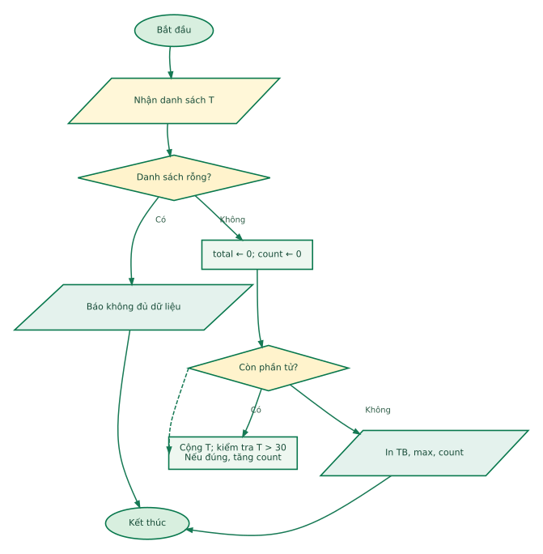

Khóa học / Mô-đun 1 / Bài 04
01 Mục tiêu và kiến thức tiên quyết
- Phân biệt vòng for và while và xác định điều kiện dừng.
- Dùng biến tích lũy, biến đếm để tính trung bình, tìm cực trị và lọc mẫu.
- Thiết kế kiểm thử trường hợp danh sách rỗng hoặc chỉ có một mẫu.
Kiến thức tiên quyết: bài trước, kiến thức lập trình tương ứng.
02 Tình huống kỹ thuật
Một thiết bị ghi bốn giá trị nhiệt độ theo thứ tự thời gian: 24,1; 27,2; 31,0; 29,2 °C. Cần tính nhiệt độ trung bình, giá trị lớn nhất và số mẫu vượt 30 °C.
Danh sách [24.1, 27.2, 31.0, 29.2] °C; ngưỡng 30 °C.
Trung bình 27,875 °C; cực đại 31,0 °C; có 1 mẫu vượt 30 °C.
03 Kiến thức và thuật ngữ cốt lõi
Lặp có cấu trúc
for duyệt các phần tử của một iterable; range(n) tạo đối tượng biểu diễn dãy số nguyên 0…n−1, không tự sinh danh sách Python thông thường.
Biến tích lũy
Để tính trung bình cần khởi tạo tổng bằng 0 rồi cộng từng phần tử; số mẫu dùng len() hoặc biến đếm. Không được chia cho 0 khi danh sách rỗng.
Tìm cực trị
Không nên khởi tạo giá trị lớn nhất bằng 0 nếu dãy có thể hoàn toàn âm; dùng max() với kiểm tra dãy rỗng hoặc khởi tạo từ phần tử đầu.
while và dừng
while phù hợp bài toán chưa biết trước số vòng; cần chứng minh đại lượng điều khiển thay đổi hoặc có cơ chế break để tránh vòng lặp vô hạn.
04 Xây dựng và kiểm tra thuật toán
Trước khi xem chương trình, hãy đọc dữ liệu đầu vào, chọn điều kiện rẽ nhánh hoặc lặp, rồi dự đoán kết quả. Mã giả mô tả ý nghĩa thuật toán; không phải cú pháp Python thực thi được.

Mã giả
Lần vết các bước phân tích
Đây là lần vết các dòng mã giả, không phải trình thông dịch Python. Tự kiểm tra nhánh điều kiện bằng bảng ca kiểm thử ở mục 07.
05 Chương trình Python đã kiểm tra
Đọc mã, dự đoán kết quả và chạy tệp bai_04.py trong thư mục code. Các mã bài 9 trở lên có thể cần dữ liệu đi kèm từ thư mục data.
nhiet_do_c = [24.1, 27.2, 31.0, 29.2]
nguong_c = 30.0
if not nhiet_do_c:
raise ValueError("Danh sach rong")
tong = 0.0
so_mau_canh_bao = 0
for t in nhiet_do_c:
tong += t
if t > nguong_c:
so_mau_canh_bao += 1
trung_binh = tong / len(nhiet_do_c)
print(f"TB = {trung_binh:.3f} °C")
print(f"Max = {max(nhiet_do_c):.1f} °C; vuot = {so_mau_canh_bao}")
06 Thử nghiệm tham số có hướng dẫn
Thay đổi đầu vào để kiểm tra trực giác và đối chiếu với kết quả dự đoán. Trình khám phá này được lập trình lại bằng JavaScript theo bài toán minh họa, không phải kết quả chạy mã Python.
07 Thực hành và kiểm thử
Thực hiện các nhiệm vụ theo thứ tự từ có hướng dẫn đến độc lập; ghi lại kết quả thực tế của chương trình và so sánh với kết quả kỳ vọng.
- Lập bảng biến tổng và số mẫu vượt ngưỡng ở từng lần lặp.
- Viết phiên bản dùng while với chỉ số.
- Kiểm tra dãy rỗng và nêu lý do cần xử lý trước phép chia.
Bảng kiểm thử bắt buộc
| Ca kiểm thử | Dữ liệu/điều kiện | Kết quả kỳ vọng |
|---|---|---|
| Điển hình | 4 mẫu đầu vào | TB=27,875; max=31; đếm=1 |
| Dữ liệu một phần tử | [30.0] | TB=30; đếm=0 |
| Dữ liệu rỗng | [] | Có thông báo/ngoại lệ rõ ràng |
| Mẫu toàn âm | [-2,-1] °C | Max=-1 °C |
08 Vận dụng vào chuyên ngành
Đếm số mẫu nhiệt độ kho lạnh vượt ngưỡng giả định trong 1 ca đo.
Đếm thời điểm điện áp ắc quy thấp theo ngưỡng thực hành tự định nghĩa.
09 Trắc nghiệm và phản hồi
Mỗi câu có bốn phương án A/B/C/D. Chọn một phương án cho mỗi câu rồi nhấn Chấm và giải thích để xem vì sao từng phương án đúng hoặc chưa phù hợp.
Rubric tham khảo (100 điểm)
| Thành phần | Điểm |
|---|---|
| Đặc tả dữ liệu, đơn vị, giả thiết | 20 |
| Mã giả, trình tự thuật toán | 20 |
| Mã Python và tổ chức hàm/dữ liệu | 25 |
| Kiểm thử, đối chiếu, phân tích sai số | 25 |
| Giải thích và đề xuất cải tiến | 10 |
10 Nhật ký học tập và đánh dấu tiến độ
Tiến độ và ghi chép chỉ lưu trong trình duyệt hiện tại; không đồng bộ với hệ thống điểm của trường.
11 Tài liệu tham khảo và nguồn
| Nguồn | Vai trò và phạm vi sử dụng |
|---|---|
| Pythonlearn-05-Iterations.pptx | C. Severance, Python for Everybody — Chương 5, vòng lặp. |
| BAI THUC HANH PYTHON CO BAN 2022.pdf | Khoa CNTT, bài thực hành Python cơ bản — nhập/xuất, điều khiển, dữ liệu, hàm và tổng hợp. |
| Python 3 Documentation | Tài liệu chuẩn của ngôn ngữ Python 3. |
Học liệu mới được viết lại theo định hướng sư phạm. Không trích lại nguyên văn hoặc phân phối các slide/sách gốc trong gói website.